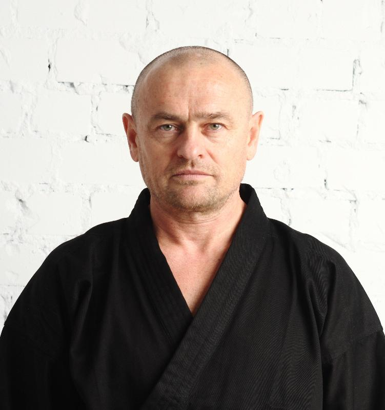

Не прост. Вам придётся много работать и единственным мотиватором будет ваша воля. Никаких соревнований, признаний и почёта, только тяжёлые тренировки и внутренняя работа над собой. Взамен вы обретёте душевное спокойствие и абсолютную гармонию, хорошую физическую подготовку и способность постоять за себя. Когда вы узнаете секрет выбора в пользу Истины, вы навсегда обретёте знание того, как делать пользу себе.
Мы рады помочь нашим ученикам понять себя, взглянуть на этот мир широко открытыми глазами уверенного человека, раскрыть потенциал неисчерпаемых возможностей и почувствовать новое качество жизни, прикоснувшись к сакральным знаниям многовековой истории боевых искусств. Мы не имеем ничего общего со спортивной школой, мы обучаем прикладному рукопашному бою, овладев приёмами которого, вы сможете защитить себя и своих близких в условиях реальной схватки, отличающейся от соревнований на спортивном ринге.
Доступ ограничен. Нам не важны: социальный статус, пол, возраст, принадлежность к религиозным конфессиям, материальное положение. Мы хотим быть уверены в том, что полученные знания и навыки будут использованы во благо, поэтому предлагаем пройти собеседование лицам от 18 лет, на предмет психологической устойчивости, отношения к криминальным структурам, образования и нравственного воспитания. Процедура обычная некорректных и личных вопросов не содержит. Конфиденциальность информации обеспечена Законом о защите персональных данных.
Наши партнёры:
Главный тренер:
ВОРОНКОВ ВАЛЕРИЙ ВАСИЛЬЕВИЧ
• Внештатный инструктор по боевой подготовке специальных подразделений силовых
структур РФ
• Призёр СССР по Рукопашному бою
• Мастер спорта по борьбе Дзюдо и Самбо
• Обладатель Чёрного пояса по Тхэквондо
• Мастер спорта по стрельбе
• Инструктор по боевой психофизиологии
• Педагог-психолог
• Участник боевых действий в Афганистане и других горячих точках, снайпер элитного
отряда специального назначения
• Награждён боевыми орденами
• Экс-сотрудник МВД России